Open for Internships: Data Analyst | SQL Developer | Power BI Developer | Data Engineer (Trainee) | Machine Learning Engineer (Intern) | Business Analyst
Solved 250+ DSA Problems on LeetCode & GeeksforGeeks | Strong in Logic & Problem Solving
I am Chandrashekhar Patil, a third-year Engineering student at Shri Guru Gobind Singhji Institute of Engineering & Technology (SGGS), Nanded. I completed my schooling under the Maharashtra State Board, where I developed a strong foundation in mathematics and analytical thinking.
I am passionate about Data Engineering, Analytics, SQL, Power BI, and Machine Learning. I enjoy working on real-world problems such as building SQL data warehouses, ETL pipelines, dashboards, and analytical solutions. I secured Department Topper in my 3rd semester with a 9.45 SGPA.
Alongside academics, I have over two years of teaching experience teaching Mathematics to students from 5th to 10th standard. This experience strengthened my communication, problem-solving, leadership, and teamwork skills, which I actively apply in technical and collaborative environments.
I am actively seeking internship opportunities in roles such as Data Analyst, SQL Developer, Power BI Developer, Data Engineer (Trainee), Machine Learning Engineer (Intern), and Business Analyst, where I can apply my technical skills and continue to grow as a data professional.
My background in Mathematics teaching (5th to 10th standard) has strongly shaped the way I approach problem-solving and data analysis. Teaching helped me break complex concepts into simple, logical steps — a skill I now apply while working with data, SQL queries, and analytical solutions.
Alongside this, I have solved 250+ Data Structures and Algorithms problems on platforms like LeetCode and GeeksforGeeks. Regular problem-solving has strengthened my logical reasoning, algorithmic thinking, and ability to analyze time and space complexity.
I approach data problems by first understanding the business or real-world context, then structuring the data logically before moving to implementation. I focus on clarity, correctness, and actionable insights rather than just writing queries or code.
As an intern, I bring strong fundamentals, disciplined thinking, and the ability to explain ideas clearly, making me effective in both technical execution and collaborative team environments.
I have solved 217+ Data Structures and Algorithms problems on LeetCode and continue to practice daily to strengthen my problem-solving and analytical skills. My practice covers arrays, strings, recursion, linked lists, stacks, queues, trees, binary search, and algorithmic optimization.
Consistent problem-solving has strengthened my logical thinking, algorithmic approach, and time–space complexity analysis, which directly helps me write optimized SQL queries, design efficient data workflows, and build scalable solutions.
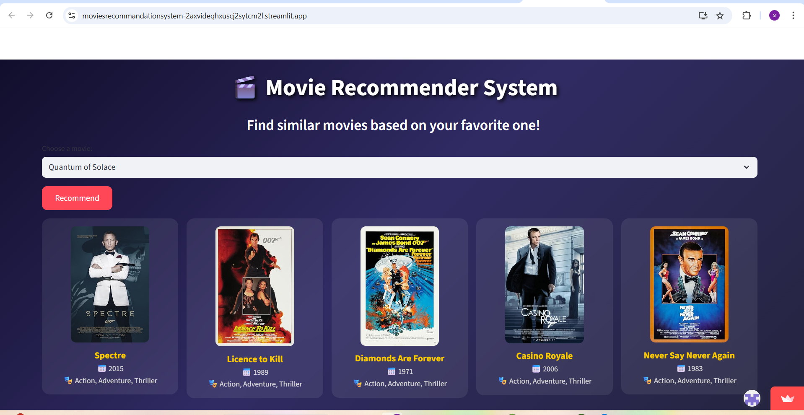
Content-based recommendation using Python & Streamlit.
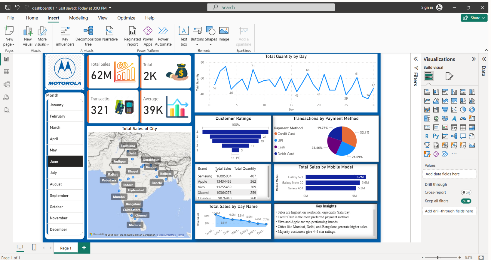
Interactive mobile sales dashboard with KPIs.
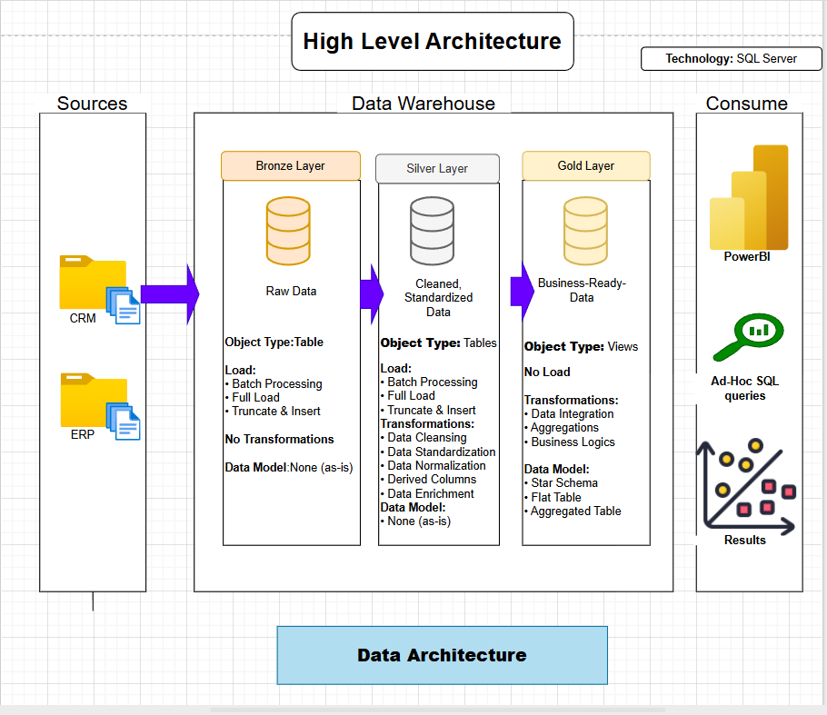
Bronze–Silver–Gold Medallion Architecture.
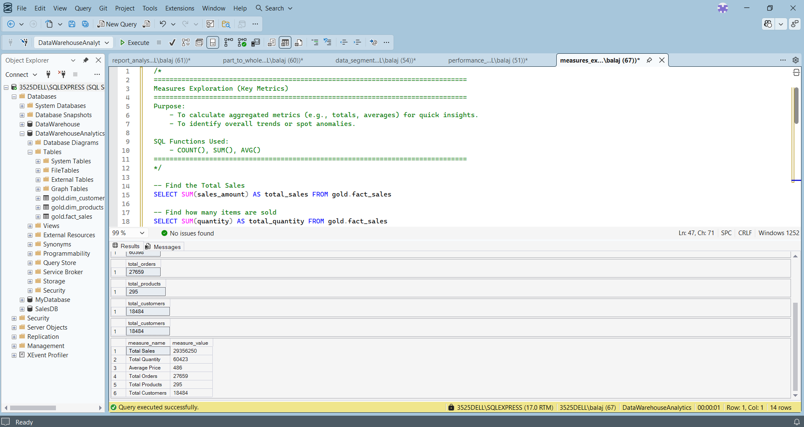
Advanced SQL analysis using joins & window functions.
A glimpse of my teaching experience at Sankalp Coaching Classes, where I taught Mathematics to students from 5th to 10th standard. This experience strengthened my concept clarity, communication skills, and logical explanation abilities.
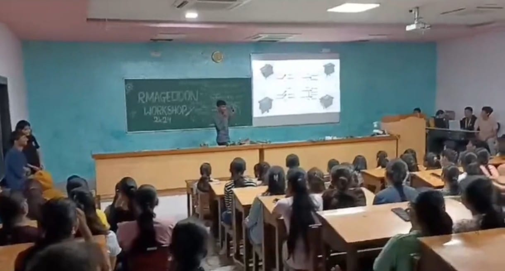
A glimpse of a student-led technical workshop conducted at my college in collaboration with RNXG team, where I actively guided participants, explained concepts, and shared practical insights related to data and technology.
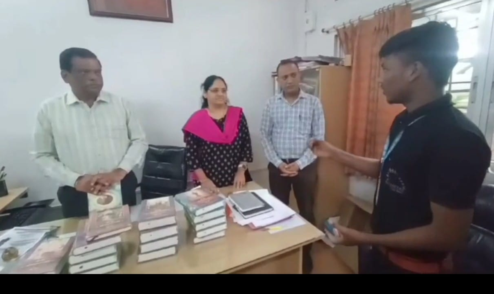
A short glimpse of professional interaction during my social internship at MGM’s Mahatma Gandhi Mission’s College of Engineering, Nanded, where I participated in discussions with Director and Dean faculty members, gaining exposure to professional communication and institutional workflows.
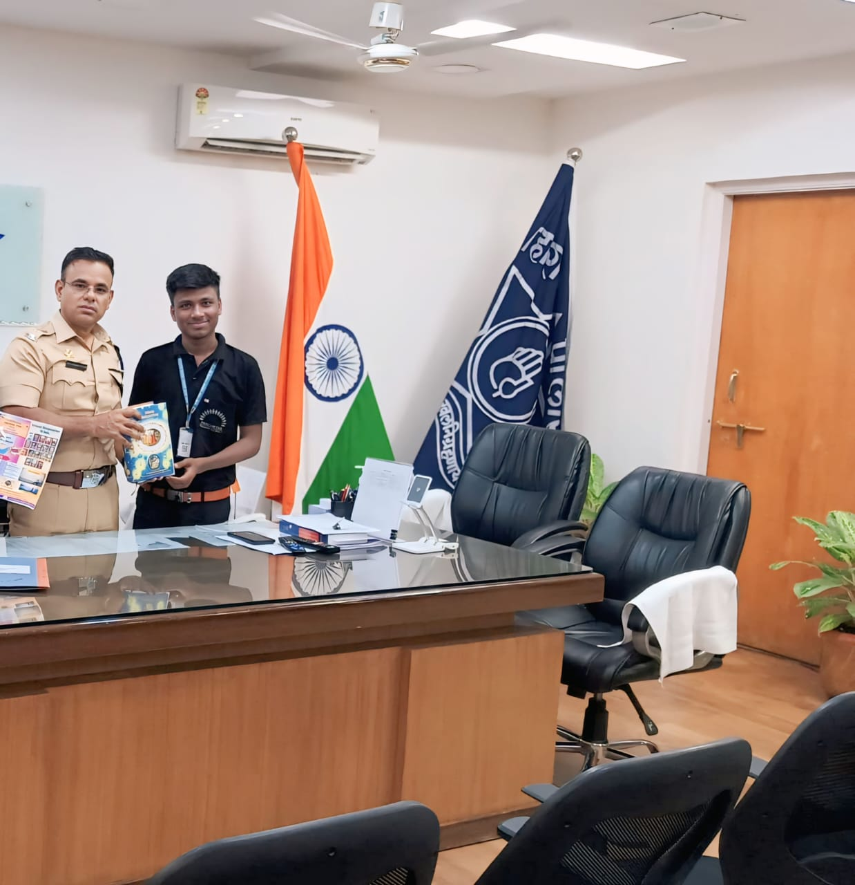
A glimpse of a memorable interaction with IPS Shri Krishna Kokate Sir at the SP Office, Nanded, reflecting inspiration, discipline, and administrative insight.
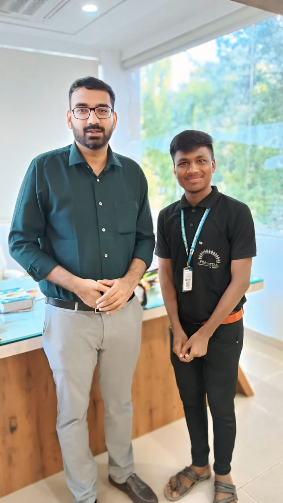
A photo captured during my visit to the Collector Office, Nanded, with IAS Abhijit Raut Sir, gaining motivation and insight into district administration and governance.
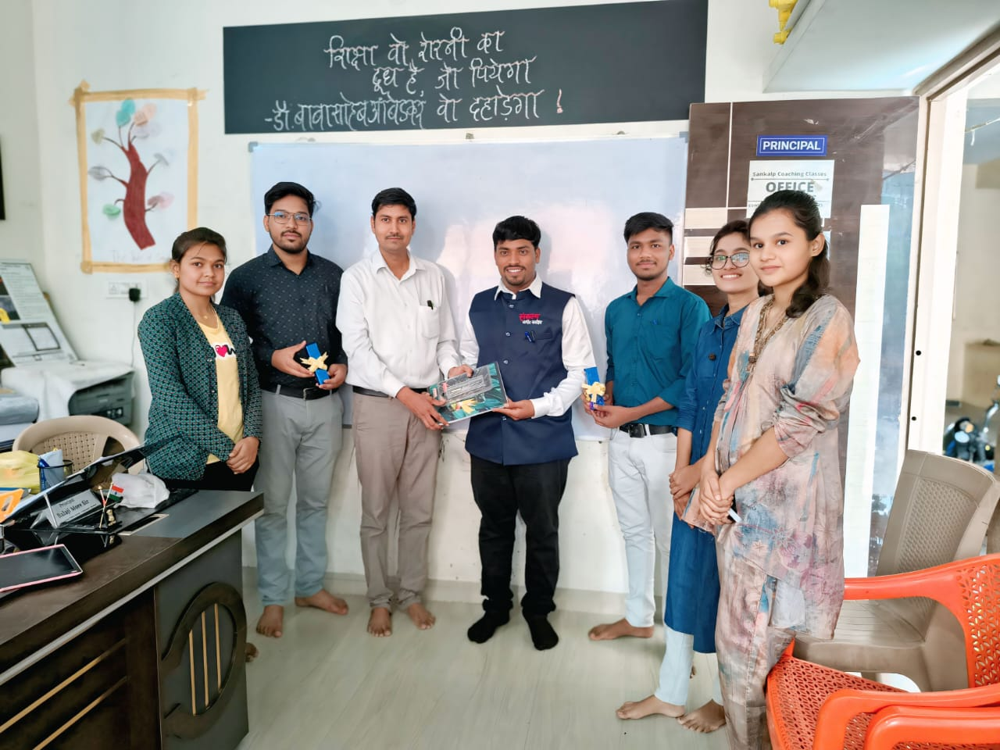
A photo captured with the faculty members of Sankalp Coaching Classes, Nanded, where I contribute as a Mathematics faculty, highlighting a collaborative teaching environment.
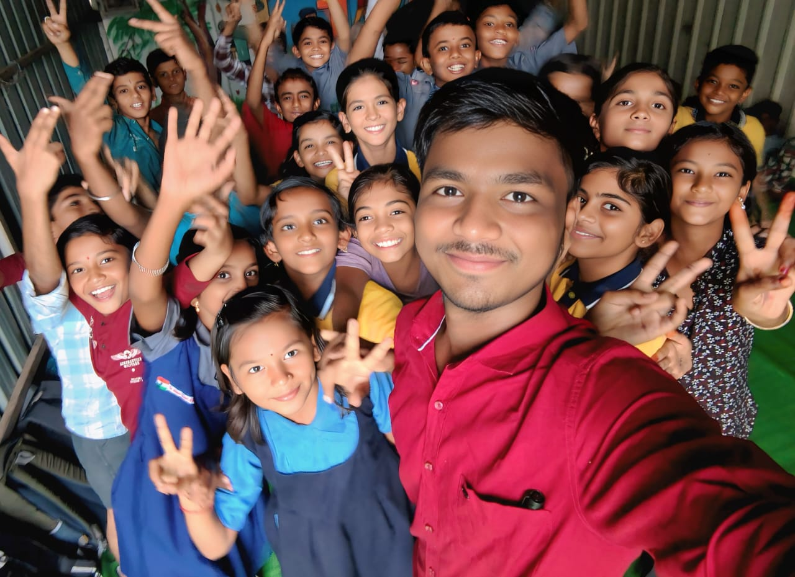
A glimpse of a classroom moment with my students at Sankalp Coaching Classes, Nanded, where I serve as their class teacher, fostering learning, discipline, and student growth.
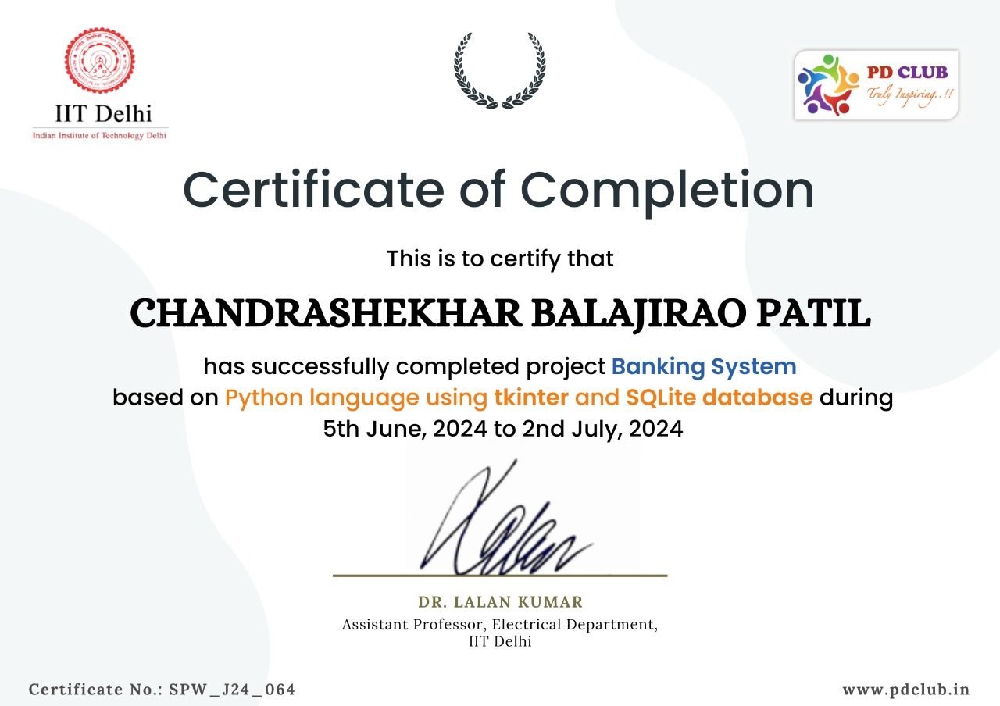
Successfully completed Python programming certification from IIT Delhi covering fundamentals, problem solving, and data handling.
Training focused on communication skills, confidence building, teamwork, and professional behavior.
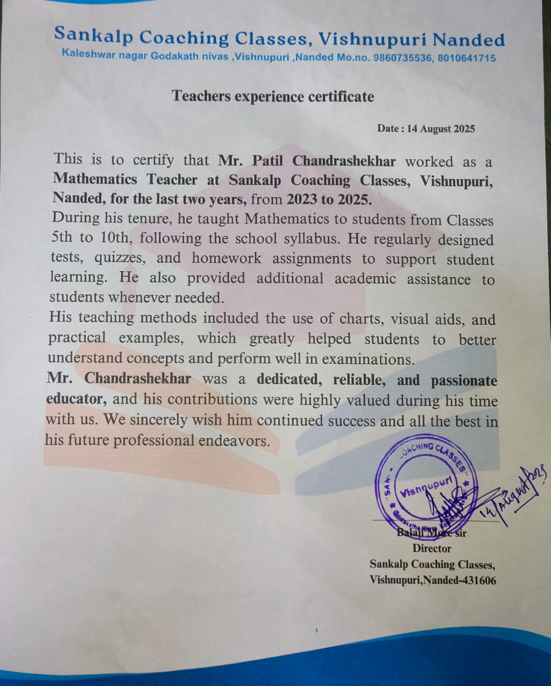
Gained teaching and mentoring experience by guiding Class 5–10 students in Mathematics, strengthening their problem-solving and logical thinking skills.